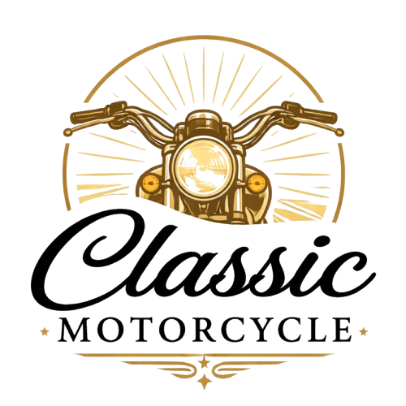
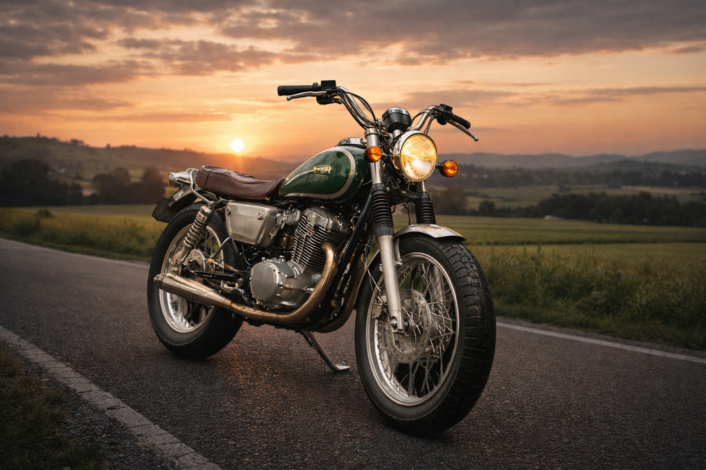
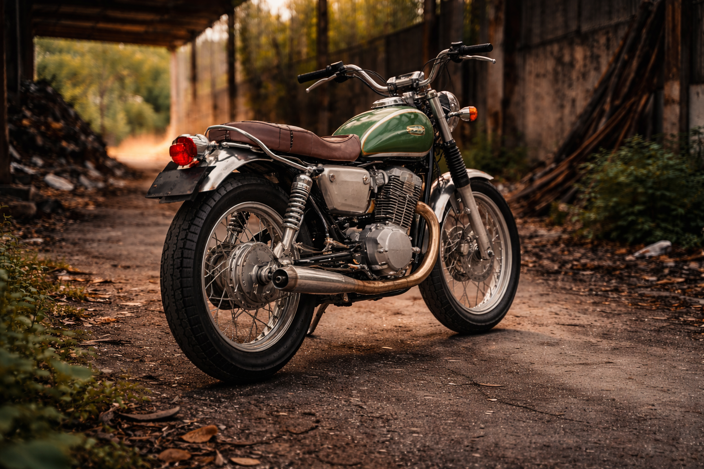
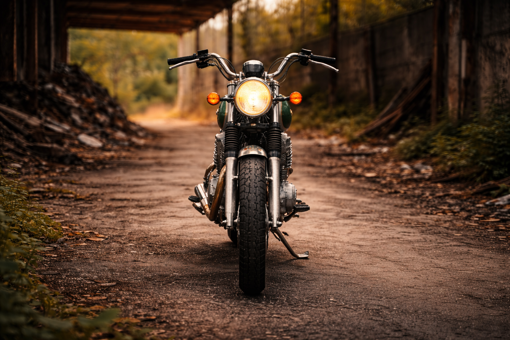

Informasi produk yang membantu memahami sebelum memutuskan



Raven 350 Classic tidak diciptakan untuk semua orang. Produk ini dirancang bagi mereka yang memahami bahwa karakter, rasa berkendara, dan kompromi adalah bagian dari pengalaman.
Dalam dunia kendaraan modern yang serba praktis, motor klasik hadir sebagai pilihan yang menuntut kesadaran, bukan sekadar kebutuhan.
Raven 350 Classic merupakan motor bergaya retro-modern dengan mesin berkapasitas menengah yang menekankan pengalaman berkendara dibanding efisiensi harian. Produk ini dikembangkan sebagai motor hobi, koleksi, dan penggunaan non-rutin dengan pendekatan desain klasik yang konsisten.
Penilaian ini disusun berdasarkan karakter mesin, posisi berkendara, serta biaya perawatan yang menyertai motor klasik.
Estimasi biaya perawatan berkisar ± Rp500.000 per bulan, tergantung kondisi motor dan intensitas penggunaan.
Sistem ini menggunakan pendekatan rule-based untuk mengevaluasi kecocokan produk berdasarkan preferensi pengguna.
Masukkan preferensi penggunaan untuk melihat kesimpulan sistem.
Keputusan yang baik tidak selalu tentang memilih yang paling praktis, tetapi tentang memahami kebutuhan dan konsekuensinya.